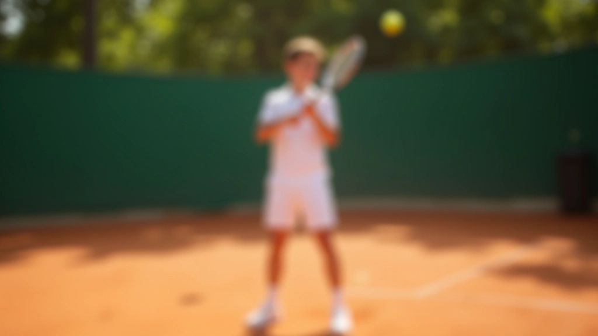
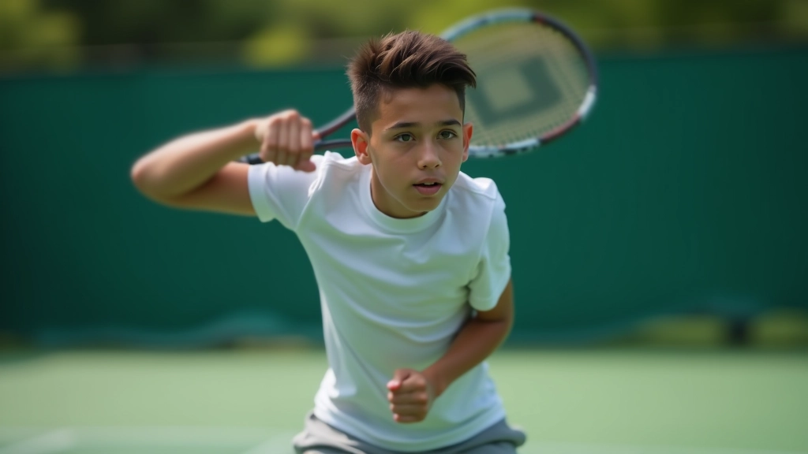
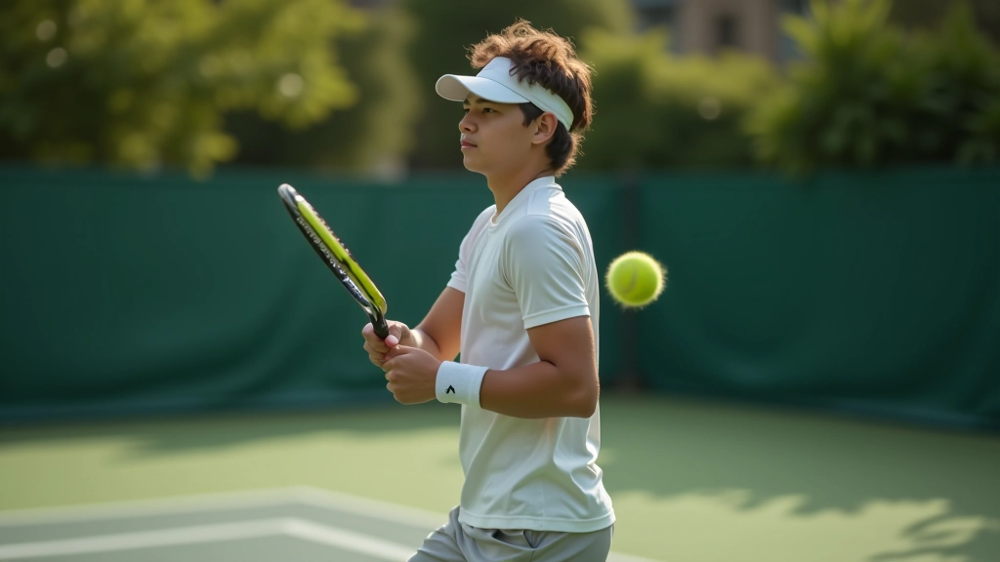

لماذا تعتبر الضربة الخلفية باليدين مهمة؟
الضربة الخلفية باليدين هي أساس قوي لأي لاعب تنس. نعم، قد تبدو معقدة في البداية، لكن بمجرد إتقان الأساسيات ستصبح أقوى سلاح في ساحتك. تعطيك هذه الضربة استقراراً أفضل وقوة أكثر من الضربة بيد واحدة، خاصة عندما تتدرب على تحسين تقنيتك.
معظم لاعبي التنس الاحترافيين يستخدمون الضربة الخلفية باليدين لأسباب واضحة: التحكم، القوة، والثبات. ستلاحظ الفرق خلال 6-8 أسابيع من التدريب المنتظم.
النقطة الأساسية: الضربة الخلفية باليدين تعطيك استقراراً أفضل لأن اليدين معاً توفران دعماً أكبر للمضرب.
الموضع الصحيح هو البداية
قبل حتى التفكير في الحركة، يجب أن تقف بشكل صحيح. موضعك على الملعب يحدد كل شيء — من قوتك إلى دقتك. قف بقدميك بعرض كتفيك، مع توزيع وزنك بالتساوي على القدمين.
الآن، دوّر جسدك قليلاً حتى تنظر للجانب. كتفاك يجب أن يكونا موازيين للشبكة تقريباً. هذا الموضع يعطيك الحرية في الحركة ويسمح لك بنقل الوزن بسهولة من رجل إلى أخرى. لا تقف مشدوداً — البقاء مسترخياً مهم جداً.
القبضة: يدك اليسرى وسلاحك
القبضة الصحيحة هي الأساس. يدك اليمنى (إذا كنت أعسر فاليسرى) تمسك المضرب بقبضة شرقية أو قبضة غربية قليلاً. يدك الأخرى توفر الدعم والقوة. كلا اليدين تعمل معاً كفريق واحد.
لا تشدّ قبضتك بقوة كبيرة — هذا يسبب إرهاقاً في الذراع. اجعل قبضتك متوسطة، مثل مصافحة حازمة وليس قبضة حديدية. ستشعر بالفرق عندما تحاول تنفيذ الضربة بسهولة أكثر.
خطوات البدء السريعة
- قف بقدميك بعرض الكتفين
- دوّر جسدك للجانب قليلاً
- أمسك المضرب بقبضة شرقية في اليد الرئيسية
- ضع يدك الثانية على المقبض للدعم
- ارفع المضرب إلى مستوى الكتف

الحركة: من البداية إلى النهاية
الآن تأتي الحركة الفعلية. ابدأ بسحب المضرب للخلف — هذا يسمى "backswing". يجب أن تكون الحركة سلسة وليست متسرعة. المضرب يرتفع إلى مستوى الكتف تقريباً، وذراعاك مطويتان قليلاً.
الخطوة الحاسمة الآن: نقل الوزن. أثناء السحب للخلف، انقل وزنك إلى الرجل الخلفية. ستشعر بالقوة تتجمع هناك. بعد لحظة، تبدأ بدفع وزنك للأمام — هذا هو "forward swing". المضرب يتحرك للأمام والأعلى بنعومة، وتصل إلى الكرة عند نقطة التلامس.
المفتاح: الحركة تجب أن تكون مستمرة وسلسة، لا تتوقف في المنتصف. تخيل حركة دائرية سلسة من البداية للنهاية.

مراحل الحركة الثلاث
المرحلة الأولى - السحب: اسحب المضرب للخلف بسلاسة، مع تدوير جسدك.
المرحلة الثانية - نقل الوزن: حول وزنك من الرجل الخلفية إلى الأمامية.
المرحلة الثالثة - الضرب: اضرب الكرة بقوة متحكم بها، مع متابعة سلسة بعد الضربة.
نقطة التلامس والدقة
حيث تلتقي المضرب بالكرة — هذه لحظة حاسمة. تريد أن تصل إلى الكرة أمام جسدك قليلاً، وليس بجانبك أو خلفك. نقطة التلامس الصحيحة تعطيك تحكماً أفضل ودقة أعلى.
عندما تضرب، ركز على ضرب منتصف المضرب — ليس على الحواف. هذا يسمى "sweet spot" وهو يعطيك أقصى قوة وأفضل إحساس. في البداية قد تخطئ كثيراً، وهذا طبيعي تماماً.
المتابعة بعد الضربة
المتابعة ليست نهاية الحركة — هي استمرار طبيعي. بعد ضرب الكرة، يجب أن يستمر المضرب في حركته بسلاسة. ارفع المضرب قليلاً نحو الكتف الآخر. هذا يحمي ذراعك من الإصابة ويعطي الضربة نعومة أفضل.
لا تتوقف فجأة بعد الضربة. الحركة السلسة هي ما يميز الضربة الجيدة عن الرديئة.

التدريب والممارسة: الطريق إلى الإتقان
المعرفة وحدها لن تجعلك لاعباً جيداً. تحتاج إلى الممارسة — الكثير من الممارسة. ابدأ بـ 50-100 ضربة يومية على الأقل. في البداية، قد لا تشعر بأن الكثير منها صحيح، وهذا ليس مشكلة.
ركز على الحركة الصحيحة أكثر من القوة. القوة ستأتي لاحقاً. خلال 3-4 أسابيع من التدريب المنتظم، ستلاحظ تحسناً حقيقياً. سيشعر جسدك بالحركة الصحيحة وستبدأ في تنفيذها بطبيعية أكثر.